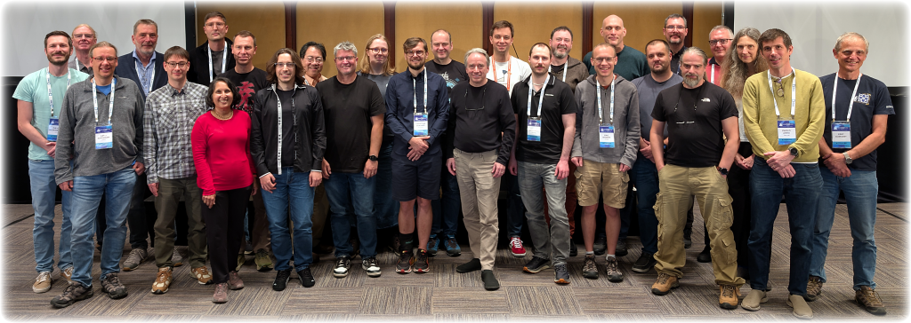

The 2026 Maintainers Summit
Unlike previous years, the 2026 Summit did not have a well-defined schedule with specific developers identified to lead the discussion on each topic. The conversation was rather more free-flowing, and this writeup will match that structure (or lack thereof). Some minimal reordering has been done in an attempt to provide a more coherent overview.

TL;DR
For those who do not want to plow through all that follows, here is a summary of the most significant conclusions. Please note that this is entirely my interpretation; it is not any sort of official communication from the Summit.
- Sashiko no longer reports pre-existing bugs found when reviewing patches; the reaction to this change was mixed. Sashiko is appreciated, but some maintainers fear it fuels the rapid tweak-and-resend cycle that new submitters tend to fall into.
- Linus Torvalds believes that blaming LLMs for the kernel community's problems is wrong, when the problem is LLM users who do not understand how to use them or how the kernel works. A properly trained LLM is a useful tool, but it takes a lot of time to reach that point.
- Torvalds and others repeatedly said low-quality contributions from new developers should receive low priority, and that the community should stop trying to make contribution easy. Many developers said, repeatedly, that trying to mentor those developers is almost always a waste of time; they do not listen.
- There is some concern about companies maintaining private kernels with LLM help, but there does not seem to be much to be done about it.
- Kernel developers should not be required to use LLMs to work in the community, but those who do need to have enough resources available to generate acceptable results.
- The requirement to add Assisted-by tags to patches created with LLMs will be removed, but maintainers still want to know about how a patch was created.
- The development community is struggling to keep up with the flood of security patches, and will continue to for some time. Some of the most urgent fixes may bypass maintainers and go straight to Torvalds. Maintainers were cautioned against telling their employers about vulnerabilities before public disclosure happens.
- The maintainers each briefly presented an aspect of the development process that causes them pain; many talked about the review process, keeping up with the load, and submitters who are not interested in learning.
- Torvalds said that the community should start thinking more about how leadership succession should work so that there will be a plan in place when, some years from now, he decides to retire.
Sashiko and patch review
The initial topic was automated patch review, and the Sashiko review system in particular. When Sashiko is looking at a specific patch, it often identifies (and reports on) problems that already exist in the code that is modified by that patch. Developers have a love-and-hate relationship with the resulting reports; it is good to know about the bugs, but nobody is thrilled to be given a laundry list of problems in need of fixing, especially if it is seen as an obstacle that must be overcome before they can merge the changes they actually intended to implement.
Recently, Sashiko developer Roman Gushchin announced that pre-existing bugs would no longer be included in patch reviews; instead, they will be stored into a separate database and made available to maintainers. Ted Ts'o started the Summit discussion by mentioning this change, noting that there is a large backlog of problems that no longer appear in Sashiko reviews. Peter Zijlstra asked why this change was made, since it is still important to know about those bugs; Gushchin answered that the bugs are still being detected, but they are hidden from the reports and set aside waiting for somebody to deal with them.
Christoph Hellwig said that it would be better to keep the pre-existing problems in the patch review, but perhaps mark them differently so that submitters know they are not required to address them. Old problems should not be forced onto new submitters, he said. Mark Brown agreed, saying that submitters should not have to fix a structural problem in order to get a spelling fix in. Hellwig added that removing the pre-existing items is worse, since they are problems that need to be fixed eventually. Gushchin repeated that those problems are collected for people who are interested in fixing them.
Zijlstra complained about maintainers who refuse to consider patches until Sashiko reports that it has found no problems. Hellwig, though, said that Sashiko reviews are a good test for submitters; if they know what they are doing, they should be able to explain why a warning is wrong. Thomas Gleixner replied that the worst submitters will just feed the review into their LLM and send the response.
Ts'o suggested that the best practice will differ from one subsystem to the next. In larger subsystems, the sub-maintainers may not have the skills to tell whether a given bug report is valid or not; they are having a harder time dealing with false positives. A small subsystem with expert maintainers handles those reports better. The solution is partly cultural, he said; it is necessary to tell people that they can ignore the pre-existing problems. Dave Airlie suggested splitting the report into two emails, one with the review of the patch and a second listing the pre-existing problems.
Hellwig shifted the topic slightly by complaining that Sashiko drops most of the recipients from its replies; they should go to everybody, he said, or the thread of the discussion will be broken. David Hildenbrand was quick to disagree, though; in the memory-management subsystem, the Sashiko emails are seen as useful for maintainers, but should not be automatically sent back to the submitter or the mailing list. In a complaint that was heard a few times during the day, he said that submitters spend time submitting multiple versions of a patch set that address comments from Sashiko before human reviewers have a chance to say whether the patch makes sense at all. The Sashiko reviews tend to discourage human reviews in general. His suggestion was that Sashiko should be the last line of defense rather than the first; maintainers should say when the automated review happens.
Review practices
That led to a discussion on review practices and when human reviewers should get involved with a submission. Ts'o said that, in the ext4 filesystem, it depends on the size of the series and the reputation of the submitter. A single patch from an unknown contributor is likely to be LLM-generated crap, so it ends up low on the prioritized list of work to review. A larger series, though, requires architectural review, so he tends to look mainly at the cover letter and limit comments to the overall design.
Jiri Kosina said that deprioritizing unknown contributors is too easy of a solution; in his experience, the patches they submit are often valid. Brown said that proximity to the hardware makes a difference, and that one-off patches to low-level code often have little value. Paolo Abeni said that, in the networking subsystem, there is a complicated scheme for prioritizing reviews that depends on the contributor's reputation, how many reviews that contributor has done, and the reputation of the contributor's employer as well. Airlie warned that tracking reputations raises privacy problems and invites developers to game the system; he understands why that approach has appeal, but a better way is needed. Konstantin Ryabitsev agreed that any reputation system will be gamed.
Laurent Pinchart said that some developers are frustrated that they have to
justify their work against criticisms from Sashiko while other,
LLM-generated patches appear to be accepted immediately. Abeni defended
the automated reviews, though, saying that the number of patches
introducing bugs has dropped considerably. Zijlstra said that, while
reading LLM-generated reviews "shuts my brain down
", he still
thought that the tool is useful; it finds real problems.
Linus speaks
At this point Torvalds, who had kept silent until now, spoke up. The problem, he said, is that we are getting increasing numbers of patches from people who do not know the kernel. By pointing the finger at LLMs, maintainers are blaming the wrong thing. LLMs can do a good job, but they are being driven by people who have no clue, and the results are ugly. He suggested maybe delaying reports from Sashiko for 24 hours; that will keep clueless developers from getting an immediate response and cranking out new versions of their work.
He has been playing with an LLM on a separate project for several months to learn about the technology, but hadn't used one on the kernel until last week. He took an old patch and had the LLM revise it; the result has made him unwilling to work without an LLM. He plans to post that series at some point. Why bother, he asked, to search for all of the call sites of a function he has just modified, when the tool can fix them all automatically? But, he said, it took six months to set up the tool to not produce bad responses. If you are a competent developer, he said, an LLM makes a great tool, but only after that effort has been put in to set it up. He resisted suggestions to post his LLM-training materials, saying that each developer needs to go through that process separately.
In conclusion, he said, arguments about how to deal with people using LLMs are misdirected; instead, developers should be focused on how to use these tools well. Hildenbrand said that Torvalds is an expert, but that we still have to deal with all of the non-experts who are submitting patches; Torvalds said to simply deprioritize them.
Sasha Levin suggested putting more information into the repository to try to direct the tools; he later posted a first installment toward building up that information. Ts'o said that it would be useful to try to provide better input for the developers who are willing to put in the effort. Alexei Starovoitov, though, answered that it is not the maintainers' job to teach humans how to work on the kernel. The community is teaching bots by way of the mailing lists, though, and that is reinforcing the problems with rapid reposting of patches.
Gushchin said that, eventually, Sashiko may be able to tell a contributor that a patch is a bad idea in general and should not be revised. Greg Kroah-Hartman said that we can expect to be on the receiving end of a firehose for the next 18 months, then we will have fixed most of the bugs and life will get better. Pinchart responded that fixing the bugs is not enough; the kernel is full of bad APIs that are easier to misuse than to use correctly. Kroah-Hartman said that the bugs will eventually be fixed, then there will be space to work on the APIs.
Ryabitsev said that problem is that contributing to the kernel has always been gated; it is too hard for many developers to do successfully. LLMs have made the creation of kernel patches easy. Pinchart said that a lot of LLM-using contributors just want to see their name in the changelog; they are not going to stay around, so any effort put into mentoring them is wasted. Torvalds repeated that maintainers should simply deprioritize those contributions. Hildenbrand asked how that could be done; Zijlstra suggested responding to a patch and seeing whether LLM-generated text comes back. Comments that do not evoke a clear human response can simply be ignored. Kroah-Hartman said that is the value of pointing out trivial items, like include files in the wrong order. Christian Brauner said that overly verbose changelogs are often a sign of LLM use.
Airlie suggested adding guidance for LLMs that prohibits them from writing changelogs. Levin has been trying to add some of that type of guidance for a while; that effort is likely to be pursued further. There was general agreement that, even if the code is written by an LLM, the accompanying changelog should be written by the human behind the work.
Private kernels
Brauner said that the work of the kernel community is changing in fundamental ways, and what it means for Linux is unclear. There is increasing interest at companies in maintaining private forks of the kernel and not bothering with upstream. Zijlstra suggested asking Google how well that works; Gleixner added that the fundamental economics around maintaining a kernel have not changed. Brauner said that the developers in the room had grown up in an environment dominated by open-source software, and that working with it could lead to a good career; if that is no longer the case, why should anybody bother contributing back?
A number of participants suggested that any company wanting to try its luck with a private fork was welcome to do so. Kroah-Hartman said that the community's goal has always been to make it cheaper to work upstream than to maintain private code. Miguel Ojeda asked whether that was still possible; he knows somebody who has used an LLM to summon forth a complete kernel written in Rust. How can working upstream be cheaper than that? Torvalds said that, if it gets to that point, the community may no longer be viable, but that is not the situation now. Starovoitov said he knew of five working kernels that had been generated in this way; Torvalds answered that there is no point in worrying about them.
Tso's said that, if somebody wants to conjure up a fast microkernel for a specific use case, they can do that now, but a general-purpose kernel designed to handle random corner cases is a different story. He thinks that there will be a demand for the Linux kernel for some time yet. Starovoitov stressed the need to understand why there is interest in generating private kernels; Linux, he said, is too full of holes that are not being fixed quickly enough, and contributing to the kernel is too hard.
Too hard, or too easy?
This was my chance to share a couple of anecdotes I had been saving for this gathering. While running on the unending treadmill that is keeping up with the linux-kernel mailing list, I had recently encountered a series of well over 100 patches, all sent within an hour from a new identity, making significant changes all over the kernel tree. When viewed that way, those patches are the obvious output of an unleashed bot and best ignored, but most maintainers only see a few of them, miss the pattern, and attempt to engage seriously with the sender. So many of those patches are applied.
There is an incredible flood of first-time contributors (nearly 800 in 7.3 alone) burying the community in patches. There have been plenty of cases of first-time contributors who make non-trivial changes to multiple subsystems over a short period of time. To me, it is clear that many of these submitters do not understand what they are doing, and they will not be around to fix or maintain those patches. But a lot of that code is getting into the kernel. My fear is that we are building up a collection of code that nobody understands, and that one day we will wake up and find that we have completely lost control of our kernel.
Airlie responded that we never really did have control over it. Torvalds said that the time has come to make it harder for new people to contribute code to the kernel. People like Kroah-Hartman have spent years trying to teach people how to contribute; it is time to stop doing that, he said. Ojeda said that there is a need to deprioritize these contributors, but that we still need to find talented people to join our community. That means finding ways to focus on the people who actually matter. For example, the people who take the time to go to conferences are much more likely to stay around. The vast majority of patches from new contributors are not worth it, but some are, and identifying them is hard.
Shuah Khan said that she can identify the people who will stick around fairly quickly, and some of the new folks who have come in are excellent. For this reason, she still spends a lot of time with people sending spelling fixes. Hellwig said that developers should be able to use whatever tools they want. For any non-trivial work, there will always be problems to fix; at that point, it is a matter of whether it is possible to have a real conversation with the contributor. Abeni, though, objected that this approach does not scale for the larger subsystems.
Generating code
Ojeda raised the topic of where generating code with LLMs makes sense. In the presence of a clear specification and a concrete problem, an LLM can create good results, he said. The tools can be good for trying out concepts; it may not even be necessary to look at the resulting code before tossing it and implementing a successful concept properly. Generating tests is another place where LLMs can do well. Brauner said that LLMs can be good for prototyping.
Hildenbrand said that the discussion had focused on new contributors, which is fine, but how can we let other maintainers know that it is acceptable to ignore patches from those people? Hellwig said that it is always acceptable to ignore patches; I replied that, for many years, we had been working hard to prevent patches from falling through the cracks.
Torvalds suggested adding an AGENTS.md file that makes generating kernel code expensive. He ends every session with a lengthy cleanup pass that takes a couple of hours to run, executing tasks like ensuring that the code matches the comments. That amount of work cannot be done with a free LLM account. I asked whether that risked cutting off bright new developers that we would rather hang onto; Torvalds answered that the kernel project only wants serious developers. That includes having access to enough resources to function in this world.
Pinchart said that he has heard from a number of developers who are afraid that they will be forced out of the community; Torvalds replied that it will always possible to write code and send email. The point is filtering out the people who cannot do that on their own. Pinchart asked Torvalds to confirm that he is not trying to push out developers who do not use LLMs; Torvalds agreed that he is not. Pinchart added that it is important to communicate that message to the community. Torvalds added that he does not want to scare off people who want to write code; his message is that you have to either put in the effort to learn, or put a lot of money into an LLM to participate.
Airlie expressed a concern that there might not be anything left for those people to write; as soon as an idea is raised, somebody can summon an implementation from an LLM. Alice Ryhl agreed that this could be a problem. Ojeda suggested setting up a way to assign a project to a developer for a period; Hellwig said that the only reason to do that would be for training purposes. Otherwise, why wait when there is an implementation ready? Ojeda said that supporting developers who do not want to use LLMs is also a good reason.
Assisted-by
Documentation/process/coding-assistants.rst was added to the 7.0 kernel to provide guidance for developers using these tools; among other things, it calls for an Assisted-by tag to be added to the changelog of patches developed with LLM assistance. The 7.3 kernel has seen 18,533 non-merge changesets (a record) added through -rc7, 1,884 (essentially 10%) of them contain Assisted-by tags. The actual number of LLM-assisted patches is surely much higher.
In the Summit, I pointed out that huge numbers of contributors are not placing those tags despite using LLMs; sometimes that is the result of ignorance of the rules, while other times contributors want to actively hide their LLM use. But few maintainers are asking contributors about LLM use and ensuring that those tags are present. As a result, Assisted-by provides no useful signal. We should either find a way to enforce the requirement, I suggested, or else just drop it entirely.
Airlie said that probably 90% of contributors are using LLMs now. Many of them, he said, fear being caught up in an anti-LLM witch hunt. He suggested adding a requirement that models read all of the kernel's documentation into an AGENTS.md file. Torvalds thought many submitters were simply ashamed to admit that they were using those tools. Gleixner suggested, not entirely seriously, adding a Not-assisted-by tag instead; Arnd Bergmann said he would find that a useful indicator of developers he should put time into helping.
Torvalds said that the tag requirement might scare people away from using LLMs, and that he would be happy to drop the requirement; Brauner added that it is pointless now. Khan said that she still found Assisted-by to be useful, but there was a strong consensus in the room that the tag had outlived any purpose it may have had, and that the requirement could be dropped.
That said, there was also a general interest in knowing how patches are created. Some would like to see which models were used, or where in the development process they were brought in. Maintainers still want to know if there is a human involved in the development process. There was agreement, though, that this information does not need to be recorded in the changelog; the suggestion came out of the discussion is that this information should be put into the cover letter instead.
Security issues and urgent fixes
The advent of LLMs has resulted in the discovery of huge numbers of security-relevant bugs, leading to a lot of fixes. Kroah-Hartman, who plays a central role in responding to those bugs, said that there are many more coming. Current tools find a lot of vulnerabilities, he said, but they are also wrong half the time; he has students working on improving that performance. He also has people and funding to help with handling the resulting fixes. We can work through this pile of problems, he said, but it will take a while. That is what the next year of work will be focused on.
Levin added that LLMs do two things that are new. One is that they are good at developing an exploit from a patch; the other is that they can be used to monitor mailing lists and figure out which fixes have security implications. The result is machines that are automatically cranking out exploits. As soon as a problem has been detected, he said, any embargo is already over. There are thousands of known exploits out there at the moment.
Kroah-Hartman said that the only thing that can be done is to get the fixes into the mainline as quickly as possible. Brauner pointed out that this leads to large pull requests after -rc1, which Torvalds has complained about. Torvalds, though, said that pull requests full of fixes are fine as long as they come from people who he can trust to have verified them to be fixes for real problems. The cost to him of doing a pull is almost zero; it's his job.
Pinchart said that, while fixing bugs is good, what is really needed is ways to prevent the addition of new bugs. Kroah-Hartman said that increased use of Rust would help in that regard; many bugs are in error paths, and Rust has better ways of handling those. There is also an effort to scale up the work on hardening C code. Some of that work is landing in the newest versions of the compilers, but developers often do not have easy access to them, and linux-next does not either. Ojeda said there is work underway to increase the availability of prebuilt toolchains that developers can use to test their code.
Kroah-Hartman said that security bugs are being immediately copied to maintainers now rather than being kept secret; it is the only way to keep up with the flood. But, he cautioned, maintainers should not be telling their employers about those bugs before they are public; otherwise the project as a whole risks running into trouble with government agencies worldwide. Once a fix has been pushed, though, the embargo ends.
Starovoitov said that there are lists of vulnerabilities that have been discovered by LLMs, many of which have reproducers available. He wondered what the best way was to get those fixes into the mainline. Torvalds said that, when there are real kernel developers involved, the most urgent patches can go directly to him, bypassing maintainers and avoiding adding to their workload. Hildenbrand worried that maintainers would lose the opportunity to review fixes in their subsystems, and that they would lose control, but Torvalds answered that reviewing all those fixes just adds stress for everybody involved.
Pain points
Prior to the Summit, Torvalds asked each of the participants to prepare a one-minute summary of their biggest pain point for the group. These presentations would happen over a half hour, with no discussion until everybody had said their piece. The "no discussion" rule held most (but not all) of the time. In the order they were presented:
- Kroah-Hartman: subsystems that do not add CC: stable@vger.kernel.org tags to patches, but which still expect the stable team to pick up the important fixes anyway. The stable maintainers are overwhelmed as it is and are not doing that.
- Pinchart has heard from developers that they submit code, but do not know when their patches have been applied or to which tree. More maintainers should send emails when they apply patches, he said.
- Eric Biggers: patches that cannot easily be applied, and which do not specify a base to which they can be applied. A lot of patches cannot be properly reviewed without applying them first, he said.
- Rafael Wysocki: insufficient feedback on patches in general. People often have opinions, but do not always share them.
- Airlie asked his sub-maintainers; most of them identified him as the biggest pain point. More seriously, it was that the DRM subsystem is still seeing too many regressions. There is a push within the subsystem to move development to GitLab in order to use its CI features; he is not standing in the way because he wants to see how it turns out.
- Ts'o: prioritization, and having too many things to look at. He would love to add a priority tag to patchwork that maintainers could set to help identify what needs attention first.
- Ryhl: not knowing how long she needs to wait after sending a version of a patch before concluding that she does not need to worry about problems with it.
- Me: huge number of patches touch the documentation directory, and it is hard to know which ones I should apply and which to leave to others. A lot of time is spent digging through linux-next to see if patches have been picked up by somebody else. Torvalds said that he often has the same problem.
- Khan complained about the same problem; it is often not clear who will pick up test patches.
- Hildenbrand: the high review load. Review cannot just be handed off to a bot; most changes need input from developers. Somehow, the subsystem needs to develop more experts, but it is hard to identify people who can grow in that way.
- Bergmann said that the review process is breaking down. When he replies to patches, he tries to teach contributors how to do better, but he has become discouraged because people using LLMs do not learn. So now those who might learn are not getting the feedback they need. The opposite problem happens too: a submitter sends 50 versions (literally) of a patch and responds to comments, but Bergmann thinks that the patch should not exist in the first place.
- Starovoitov: maintainers should not be looking for bugs or coding-style problems; bots will do that now. Instead, reviews should be strictly focused on the "why" of a patch, whether the fix is made in the right place, and is in good taste.
- Ryabitsev: the last entry in the MAINTAINERS file, titled "THE REST", directs every patch to the linux-kernel mailing list. That generates millions of outgoing emails every day, leading to constant delivery problems. He asked whether that entry could be removed or changed to redirect patches to the patches@vger.kernel.org list. He later submitted a patch to get_maintainer.pl, causing it to only add linux-kernel if no other list has been identified as a recipient for a patch.
- Levin: subsystems are diverging in their practices, and many now have a manual on how to interact with them. That makes life hard for developers working across subsystems; he would like to see the community come back together.
- Hellwig: the Sashiko review workflow is broken, causing people to continually resend patches. There is no obvious answer to this problem, but something needs to improve.
- Brown asked subsystems with tests to actually build and run them so they don't break in linux-next.
- Kosina: there needs to be a better way to prioritize the handling of submissions. He liked Ts'o's idea, but without using patchwork.
- Will Deacon: the process is not much fun anymore; maintainers try to explain to contributors how they could improve, but are ignored.
- Danilo Krummrich does not mind seeing multiple versions of a series in a short time, but submitters are just feeding the Sashiko reviews into their LLM to create those new versions. A way needs to be found to encourage submitters to engage and talk to maintainers.
- Abeni: the infrastructure is not keeping up with what the subsystem needs. Networking runs its own version of Sashiko, which produces better results, but it can't be run for every networking subsystem. That creates extra friction for maintainers.
- Eric Dumazet announced that he had just retired, and that all of his pain points have vanished.
- Gushchin: Sashiko has gone from an experiment to a widely used tool in the community. There is a lot of work involved beyond developing the bot itself; he has to obtain tokens to run it, explain its value to management, and more. He could really use more people and more feedback. He only knows a few kernel subsystems; if people don't tell him about problems with the others, he will never know.
- Julia Lawall does not know if her work, much of which has involved finding and fixing bugs in the kernel, will have any relevance in the future. Five years ago she would have asked for more feedback from developers, now she isn't sure if it matters.
- Ojeda: tree-wide refactoring work can be tricky, and the advent of more Rust code seems set to make it harder.
- Gleixner has spent much of his time looking at design patterns and explaining them in lengthy emails. Developers used to appreciate that work, but more recently it is mostly ignored, and he wonders if it is still worth doing. In the LLM world, people say that they don't have time for design and, besides, the code works. He has spent 25 years doing cleanups, and does not want to merge more stuff that will just have to be cleaned up in the future.
- Brauner: code removal. The time has come to fix less code and to remove more of it.
The idea was that these pain points would be discussed after the presentation, but that did not really happen. Instead, the conversation took a rather different direction.
Succession
Torvalds let it be known that he was about to go on vacation for two weeks, which is a bit awkward given that there is a merge window coming. So he was considering extending the merge window for a third week in response. There was not a lot of opposition to that idea in the room.
He went on to talk about succession plans. The 2025 Summit included a discussion on that topic that was focused mostly on what should happen if Torvalds abruptly became unable to continue leading the project. This year, he said that, while he is not going anywhere anytime soon, it is not too early to think about how a graceful transition to a Torvalds-less future might happen. To help that process along, he has started actively ignoring more emails and stepping back a bit from development questions. He is curious to see how the community will react.
There followed a wide-ranging but inconclusive discussion about the role Torvalds plays in the community and how things might operate when he finally decides to move on to something else. The two chief aspects of that role of can be described as "patch monkey" (executing pull requests) and resolution of conflicts between developers — which he professed to be bad at. In the future those roles could perhaps be split apart. The project could name a new benevolent dictator, or perhaps move to some sort of committee model.
No decisions were made — none are needed now, and none were expected. But Torvalds clearly feels that it would be better to think about these things well ahead of time rather than under pressure. There will be a mailing list created, initially with the Summit attendees as members, where the discussion can simmer. At the end, Gushchin pointed out that the world looks quite different now than it did one year ago; with the current rate of change, it is going to be hard to make meaningful plans for an event that is expected multiple years in the future.
Metadiscussion
The closing topic was about the Maintainers Summit itself, and how it might be improved in the future. It started with a reference to this August thread where James Bottomley questioned whether the event should continue to exist at all. Few people seem to think it should be abolished, but there were concerns expressed about the process for selecting attendees, with some people describing it as a closed clique.
Perhaps unsurprisingly, the maintainers in the room, all of whom had received invitations, did not see a lot of problems with that process. High-level process discussions tend to need the high-level maintainers in the room. As Brauner pointed out, that group is always going to seem a bit elitist. But, he said, getting that group into the same room once each year is helpful for the management of the project as a whole.
Torvalds said that the older format of the Kernel Summit, which topped out at about 150 participants, was simply not manageable. The smaller group is at least able to have constructive discussions, he said. Hildenbrand said that one problem is a widely held impression that proposing a topic for the Summit will necessarily result in an invitation; he suggested that the call for topics next year should be rephrased.
Ts'o said that colocating the Summit with the Linux Plumbers Conference (LPC) works well, and that holding the Summit afterward works best. That allows the participants to gather information from others and bring it into the more focused group.
Hellwig put in a request for a different sort of gathering where developers from one subsystem can hold "office hours" to talk with others. That sort of happens at conferences now but, he said, the time at those events is too structured and there are too many other distractions happening. Bergmann pointed out that the LPC kernel-summit track has become less relevant over the years, and suggested that some of that track's time could be repurposed; that idea was reasonably well received. There was also talk of using a videoconference server to host subsystem-specific office hours at other times.
The meeting closed with a general agreement that its format works fairly
well, and that the office-hours idea might improve it. The biggest change
might be in the call for topics, which may be rewritten to provide more
information about how the selection process works and to make it clear that
people can nominate others to attend. There was, finally, a suggestion
that the ksummit mailing
list could be used more. There are usually interesting discussions
there in the lead-up to the event, but then it goes quiet the rest of the
year; there is no reason why discussions of that type can't happen there at
other times as well.
| Index entries for this article | |
|---|---|
| Kernel | Development tools/Large language models |
| Kernel | Kernel Maintainers Summit/2026 |
Posted Oct 12, 2026 16:10 UTC (Mon)
by ojeda (subscriber, #143370)
[Link] (6 responses)
The vast majority of patches from new contributors are not worth it, but some are, and identifying them is hard. Not sure if this is meant to report on what I said, but in my opinion identifying new contributors that are talented is not hard, but easy instead (not just via conferences, but generally via email too). Regarding whether the patches are worth it or not: in my opinion, the value of trivial patches (and "good first issues") as an introductory mechanism is diminished nowadays due to how easily they can be generated with LLMs. Those trivial patches tend to account for a substantial amount from new contributors. So that is why the bar may be rising. I still think (and recommend newcomers) that one of the best ways to get involved is to review patches from the mailing list, because that allows one to get familiar with certain areas of the tree, to get to know the people around those areas, to interact with them, etc. Some of that work is landing in the newest versions of the compilers, but developers often do not have easy access to them, and linux-next does not either. Ojeda said there is work underway to increase the availability of prebuilt toolchains that developers can use to test their code. Yeah, I was referring to the kernel.org container images initiative from Guillaume Tucker. Regarding
Posted Oct 12, 2026 16:22 UTC (Mon)
by ojeda (subscriber, #143370)
[Link]
Ojeda raised the topic of where generating code with LLMs makes sense. In the presence of a clear specification and a concrete problem, an LLM can create good results, he said. Yeah, in particular, LLMs shine in tasks where one can provide a verifier, e.g. a proof assistant kernel. Similarly, LLMs work well when there is an expert to interact with them who can act as such a "verifier" (or at least "guider"). That is also why I think we still need to focus on finding new, talented maintainers that can leverage these tools. At least, as of the situation today.
Posted Oct 13, 2026 23:15 UTC (Tue)
by NYKevin (subscriber, #129325)
[Link] (1 responses)
I wonder if newcomers feel comfortable that they can do this without getting flamed for minor (or major) errors in their reviews. The kernel has had problems before with psychological safety, and posting a review does not allow the defense of "I'm just trying to do my day job."
Posted Oct 13, 2026 23:30 UTC (Tue)
by corbet (editor, #1)
[Link]
Posted Oct 22, 2026 13:21 UTC (Thu)
by mrugiero (guest, #153040)
[Link] (2 responses)
I still think (and recommend newcomers) that one of the best ways to get involved is to review patches from the mailing list, because that allows one to get familiar with certain areas of the tree, to get to know the people around those areas, to interact with them, etc. By reviewing them you mean actually posting my review of it to the mailing list? I suspect it may look very weird to have an outsider suddenly chime in and give their opinion, I don't feel I have the moral authority to do that to a subsystem or project I never contributed to. How would that work? I'm specially curious about how seriously an ACK or a NACK from my part would be perceived in that scenario.
Or you mean just reading the patches to learn?
Posted Oct 22, 2026 13:24 UTC (Thu)
by corbet (editor, #1)
[Link]
Posted Oct 22, 2026 16:14 UTC (Thu)
by mathstuf (subscriber, #69389)
[Link]
Yeah, just post reviews. AFAIK, there are no automated bots queuing patches based on the first review response, so there's still a human that's going to filter it for anything "important". Even just reviewing docs is helpful (though asking to go from no docs to anything is usually effectively routed to
Posted Oct 12, 2026 18:25 UTC (Mon)
by Paf (subscriber, #91811)
[Link]
A big issue is if it’s affordable to do so; our tool is simpler than sashiko (at the cost of less accuracy, I suspect) and can be run with a standard LLM subscription using the coding agent tool. Sashiko can too of course.
So this option to run it yourself *mostly* solves the many series with repeated small changes problem for us. Randomness means the posted patch still sometimes gets some other stuff, but dramatically less.
Another option we’re probably going to implement is a service folks can submit to if they can’t afford/don’t want to use their own subscription. But ours is a much smaller community with open but gated participation; drive by is much harder. But to my but, Sashiko is already freely reviewing every submitted patch in the kernel.
Anyway, perhaps some part of these ideas could be useful to the kernel.
Posted Oct 12, 2026 19:03 UTC (Mon)
by collinfunk (subscriber, #169873)
[Link] (16 responses)
If LLMs give the person interacting with them a false sense of knowledge such that they send in a bad patch, as Linus seemingly admits here, isn't that a problem with LLMs? I am confused about how finger-pointing at LLMs is wrong in his view. Note that I am not saying they are the entire issue. We have many fingers we can use to point.
Posted Oct 12, 2026 19:18 UTC (Mon)
by kayracizmeci (subscriber, #185237)
[Link] (12 responses)
Posted Oct 12, 2026 19:30 UTC (Mon)
by pizza (subscriber, #46)
[Link] (10 responses)
....Why not? We hold tool manufacturers legally accountable for preventable "user errors" all the time.
Posted Oct 12, 2026 19:38 UTC (Mon)
by kayracizmeci (subscriber, #185237)
[Link] (6 responses)
Fair. But what's the conclusion then? We tell manufacturers to make better LLMs? Even then if someone uses a
Posted Oct 12, 2026 20:45 UTC (Mon)
by pizza (subscriber, #46)
[Link] (5 responses)
Simply telling them to get better accomplishes nothing.
Holding them legally liable for bad outcomes, on the other hand... that will get very expensive very quickly, forcing them to clean up their act or go bankrupt.
(Of course, LLM vendors are fighting tooth and nail to avoid even a whiff of legal liability, because they know being held to the same standards as everything else means there is no way to ever recoup the trillions of dollars being set alight along the way)
Posted Oct 13, 2026 1:02 UTC (Tue)
by Paf (subscriber, #91811)
[Link] (4 responses)
This just doesn’t seem like a situation where legal liability makes any sense. It seems to be suggesting they should be legally liable for the models not being better, which is something they’re already trying to do as fast as possible so they can make money…?
Posted Oct 13, 2026 1:13 UTC (Tue)
by pizza (subscriber, #46)
[Link] (3 responses)
A common standard in other endeavours is if they advertised it as being suitable/capable. Which they very much are.
I also see liability being forced onto model purveyors by their customers (or perhaps more accurately, their customers' insurance carriers). Because companies are already held liable for what their representatives say/promise; it doesn't matter if a "real" person said it or not.
Posted Oct 13, 2026 11:01 UTC (Tue)
by malmedal (subscriber, #56172)
[Link] (2 responses)
Posted Oct 13, 2026 18:22 UTC (Tue)
by rgmoore (✭ supporter ✭, #75)
[Link] (1 responses)
It's not clear cut either way. If the company's statements are equivocal- if the promises from marketing contradict the disclaimers from legal- it's likely to be up to a jury to decide which one is more important. Not exactly the same thing, but as a related example, Tesla's disclaimers about the limitations of its driver assistance features haven't been a perfect protection against lawsuits; juries are still allowed to decide that selling "Autopilot" and "Full Self Driving" is making promises the disclaimers can't disclaim. If an AI company sells its product as letting you fire all your programmers, it may find itself losing lawsuits when customers take them literally and encounter problems, no matter what the disclaimers say.
Posted Oct 14, 2026 7:47 UTC (Wed)
by malmedal (subscriber, #56172)
[Link]
Posted Oct 13, 2026 8:09 UTC (Tue)
by pbonzini (subscriber, #60935)
[Link] (1 responses)
And the idea that the LLM can take you from 0 to 100 is simply not true - neither the "from 0" part nor the "to 100" part. It may do so for a quick write-only script, but not in a complex project that is driven (even if with LLM help) by human design. LLMs in particular are very bad at telling you how deep a hole *you* have decided to dig yourself in.
Recently I've seen a case in which I was writing a patch mostly with AI, and while I was cleaning it up someone beat me to creating a PR on GitHub... except it wasn't even bad quality, it parsed some input but then didn't even do with the input what it said on the tin. While the person didn't cut off a limb of theirs, the usage of their brain while creating the PR was roughly the same.
Posted Oct 22, 2026 13:36 UTC (Thu)
by mrugiero (guest, #153040)
[Link]
Posted Oct 13, 2026 11:43 UTC (Tue)
by smoogen (subscriber, #97)
[Link]
We can't blame the tool while the user makes the mistake. Maybe the tool is bad, sure but they're the one posting and trusting the tool wrongly.
....Why not? We hold tool manufacturers legally accountable for preventable "user errors" all the time. Maybe this is different in other countries, but in the US tool manufacturers are only held 'legally accountable' only after a lot of civil lawsuits. Laws covering accountability usually only occur when the lawsuits get too expensive for the companies to get settled out of court and want an 'even' playing ground ($X keeps getting away with it but the rest keeps losing). It usually takes multiple decades of mishaps before that gets to be the case. I am not hopeful that legal accountability will occur anywhere soon enough for dealing with slop overload (any more than SPAM overload was ever really dealt with).
Posted Oct 12, 2026 19:56 UTC (Mon)
by collinfunk (subscriber, #169873)
[Link]
I generally agree, but it seems this is a widely experienced phenomenon, as evidenced by the number of low-quality patches and bug reports that frustrate maintainers. At what point does it become more of a problem with technology than with the individual users? I know there is a line to be drawn there, but I am not sure where either.
Posted Oct 12, 2026 19:23 UTC (Mon)
by rahulsundaram (subscriber, #21946)
[Link] (1 responses)
LLMs exist and people are going to use it to submit patches. Finger pointing doesn't really solve that problem anyone more than it did when people were blaming GitHub for bad PRs.
The question really is, what is a project going to do about it and the answers can range from a) Having a policy that says LLM contributions are rejected and somehow enforce it b) Limit by scope: fine for tests and docs, not for security or license-sensitive code c) Hold the submitter accountable: they own the patch, must understand every line, and answer review comments themselves. d) Require disclosure, e.g. an Assisted-by: trailer, so reviewers know how much scrutiny to apply e) Add process friction: issue before PR, caps on open PRs for newcomers, tests required and reject low effort PRs.
Right now, the open source project policies are all over the place and range from a-e and beyond.
Posted Oct 13, 2026 1:59 UTC (Tue)
by marcH (subscriber, #57642)
[Link]
And... the contribution experience was consistent before LLMs?
Posted Oct 22, 2026 13:32 UTC (Thu)
by mrugiero (guest, #153040)
[Link]
Now, for the "are LLMs the problem" question, I think it's fair to say in part they are, even if they have the positive side of being really useful on the right hands. Even garbage code took some effort before LLMs, so most people just wouldn't bother unless the thing actually mattered to them. Now it's easy and subsidized and I guess you can shitpost on LinkedIn if it goes right, so they go ahead and send utter garbage. It perverts the incentives in a bad way.
Posted Oct 12, 2026 20:34 UTC (Mon)
by roc (subscriber, #30627)
[Link]
Maybe those sorts of patches are in the minority, I don't know, but that process was already hard and it sounds like it's going to get harder :-(.
Posted Oct 13, 2026 1:53 UTC (Tue)
by marcH (subscriber, #57642)
[Link] (10 responses)
It's so detailed that I wonder whether the recording was fed to an LLM? ;-)
> Thomas Gleixner replied that the worst submitters will just feed the review into their LLM and send the response.
A "cooldown" is a very simple and very effective mitigation for several of these problems. Sashiko should review v1 immediately, then ignore all consecutive versions for at least 24h or more. And then review only the most recent one.
Instructions on how to run Sashiko locally (without making any noise) should be provided every time.
> Dave Airlie suggested splitting the report into two emails, one with the review of the patch and a second listing the pre-existing problems.
Was there a consensus on this solution to that other problem? It really looks like the best of both worlds, can't find any drawback with it.
Posted Oct 13, 2026 10:27 UTC (Tue)
by jkingweb (subscriber, #113039)
[Link]
It's so detailed that I wonder whether the recording was fed to an LLM? ;-) Mr. Corbet has been doing this so well for so long, I suspect we'd notice a drop in quality were that to be done. Besides, according to the LWN FAQ this would likely be against current policy: All original LWN content is human-written, and we have no intention of changing that policy.
Posted Oct 13, 2026 12:43 UTC (Tue)
by corbet (editor, #1)
[Link] (1 responses)
Posted Oct 30, 2026 3:49 UTC (Fri)
by ras (subscriber, #33059)
[Link]
That's a high bar.
Every word I post online is hand typed by me, but it's almost always been critiqued by an LLM.
They are extraordinarily good at fixing spelling and grammar mistakes, and good at doing fact checking and checking reasoning, but bat well below 50% at thinking up novel ideas or viewpoints and will usually refuse to take them at face value. However, you can mostly convince them those rejected ideas are sound, and in the process make your reasoning clearer to human readers as well. On the odd occasion I can't convince them, I usually drop the post. I figure if I can't explain the rationale to an LLM, I'm probably not going to convince a human either.
Explaining the rationale means you have to convince the LLM that its initial summary of the internet hive mind its stochastic parrot spat out is wrong. You do that in the usual way - with evidence and deductions from that. If the evidence matches what they know (they know an awful lot, so if you're right you don't have to give citations, you just have to give them enough so that same stochastic parrot can dig up the facts it's already seen), they are completely capable of checking the reasoning you used to arrive at your deductions.
Used well, an LLM can get a single poster closer to the editorial standard LWN achieves with its team. It's the same sort of force multiplier Linus is saying he gets with coding. Like all force multipliers, it can be used to polish rubbish into the flood of slop we see today. Yes, LLMs enabled that flood, but I don't see why that's a good reason to eschew them.
Posted Oct 13, 2026 15:34 UTC (Tue)
by iabervon (subscriber, #722)
[Link] (6 responses)
The first version is really only code rather than natural language so that the reviewer can tell what the patch author is really proposing as the change, and so that the patch author can determine that this code would address their problem by testing it. Only after people have agreed on the approach does it make sense to fix all the implementation details; having a Sashiko-prompted v2 follow the v1 that maintainers may have started looking at just confuses matters.
Posted Oct 13, 2026 19:59 UTC (Tue)
by marcH (subscriber, #57642)
[Link] (5 responses)
True... sometimes. Even in that case, it's not really a problem.
> Only after people have agreed on the approach does it make sense to fix all the implementation details; having a Sashiko-prompted v2 follow the v1 that maintainers may have started looking at just confuses matters.
Torvalds repeatedly recommended to "de-prioritize" clueless submitters. But how do you identify those? Someone rushing to fix minute details before getting agreement on the high-level approach is a clear sign of someone clueless and/or feeding Sashiko's review into their own model. BTW this has been a clear sign long before LLMs in any project using any sort of automated CI. That signal was just less needed before. Maybe kernel maintainers are not familiar with this signal because Continuous Integration has been coming incredibly late to most kernel subsystems and other email-based review "systems"?
Also, having v1 and v2 is more confusing than just v1, but it's still a massive improvement compared to v1, v2,..., vN when Sashiko is "conversing" with the submitter's LLM.
There are many other ways to configure a cooldown / rate-limit. For instance you could review v1 only after 24h. The long story short is: when you have "too much" of something, then you need some rate-limit - it really is that simple. The question is not "if" but "how" you configure the limits (hint: with some iterative trial-and-error).
Posted Oct 14, 2026 9:32 UTC (Wed)
by taladar (subscriber, #68407)
[Link] (1 responses)
Posted Oct 14, 2026 12:06 UTC (Wed)
by marcH (subscriber, #57642)
[Link]
Forges have already been discussed a million times here and elsewhere, and of course centralization makes it easier to implement much needed cooldowns and rate-limits. So back to the topic: even without a forge, it shouldn't be that hard to implement rate limits in Sashiko too... In fact it should have some limits already (tokens are not free) and maybe this thread is actually only about how to _configure_ those limits? Am I being too optimistic?
Posted Oct 14, 2026 17:54 UTC (Wed)
by intelfx (subscriber, #130118)
[Link] (2 responses)
Torvalds repeatedly recommended to "de-prioritize" clueless submitters. But how do you identify those? Someone rushing to fix minute details before getting agreement on the high-level approach is a clear sign of someone clueless and/or feeding Sashiko's review into their own model. BTW this has been a clear sign long before LLMs in any project using any sort of automated CI. That signal was just less needed before. Maybe kernel maintainers are not familiar with this signal because Continuous Integration has been coming incredibly late to most kernel subsystems and other email-based review "systems"? The problem is that some upstreams won't even look at the high-level approach before you get a green CI on your patches (aka "your patches fail checkpatch, this tells me they are a draft and/or you are clueless, first get your patches to pass all checks, only then we'll talk"), and yet other upstreams will consider you clueless for rushing to get a green CI on your patches before agreeing on the high-level approach.
Posted Oct 15, 2026 4:22 UTC (Thu)
by marcH (subscriber, #57642)
[Link] (1 responses)
(again nothing here is new or specific to LLMs)
Posted Oct 15, 2026 8:34 UTC (Thu)
by intelfx (subscriber, #130118)
[Link]
The only serious mistake is not to have any CI at all and not to have some local CONTRIBUTING.md file listing the expectations... for both humans and bots. And of course CI not having rate limits. Yes, I should have been more specific — the problem is when you can't tell one from the other until after your patch is summarily rejected and/or you get put on the clueless submitter list through no fault of your own. Sometimes it's even the same upstream, but the maintainer is in a different mood today.
Posted Oct 13, 2026 5:24 UTC (Tue)
by cmonsanto (subscriber, #96651)
[Link] (5 responses)
Posted Oct 13, 2026 8:57 UTC (Tue)
by WallaceIT (subscriber, #160340)
[Link] (2 responses)
Posted Oct 14, 2026 13:37 UTC (Wed)
by geert (subscriber, #98403)
[Link] (1 responses)
Posted Oct 14, 2026 14:28 UTC (Wed)
by mikebenden (guest, #74702)
[Link]
Fast forward to current times, and ideology (Free Software) no longer seems well aligned with pragmatism -- most relevant projects are effectively
These days, a lot of projects feel like they're Free Software *in name only*. Network effects ensure that "just fork it and it will prevail if it's better" is rarely a viable course of action.
"Newcomers" seem to be overwhelmingly pragmatic rather than idealistic, and have never been exposed to why idealism should even be on their radar.
Sounds like a good time to retire... :)
Posted Oct 13, 2026 14:01 UTC (Tue)
by cjd8 (subscriber, #184843)
[Link] (1 responses)
Far from it. Many subsystems are welcoming to new kernel developers - university students, people who are scratching an itch or are just trying to dip their toes into open source (this is how I started). We review a lot of patches from new contributors in the IIO subsystem and most get merged after some rework.
Posted Oct 15, 2026 7:45 UTC (Thu)
by donald.buczek (subscriber, #112892)
[Link]
Many subsystems are welcoming to new kernel developers And some are not. Two discouraging experiences from recent years immediately came to mind, which have contributed to my lack of ambition to submit anything upstream. I had one of these two incidents analyzed by an uninvolved third party [1] in terms of the interactions and the process. The report has been anonymized and includes no references, because I don’t want to engage in public shaming here. https://github.molgen.mpg.de/gist/donald/0abeb620f802ffdefeb3cab393a28360 Maybe it wasn't really that bad after all, and as the recipient of those public insults, I'm just a little biased in my personal assessment. [1]: The uninvolved third party is, of course, an LLM with access to the list threads and prompts such as “fact-based,” “neutral,” and “critical.” While arguments regarding AI are certainly understandable, I would discourage replies on that topic as it is off-topic here.
Posted Oct 13, 2026 9:55 UTC (Tue)
by alx.manpages (subscriber, #145117)
[Link] (4 responses)
That claim seems to be against the evidence. I have numbers that say the opposite: <https://lore.kernel.org/lkml/arK1nOp3vgqk2MvG@debian/>
Posted Oct 13, 2026 14:21 UTC (Tue)
by pbonzini (subscriber, #60935)
[Link] (2 responses)
Posted Oct 13, 2026 14:58 UTC (Tue)
by alx.manpages (subscriber, #145117)
[Link] (1 responses)
I plan to see the numbers for fixes 2, 3, and 4 releases after the introduction, to see how the tails develop.
With that, and waiting for a year, we can maybe see a little bit more whether there's a trend, or just some outliers.
Posted Oct 13, 2026 15:07 UTC (Tue)
by corbet (editor, #1)
[Link]
I'm going to look at some of the fixes numbers for next week's development-statistics article as well, I think.
Posted Oct 13, 2026 21:45 UTC (Tue)
by MarcB (subscriber, #101804)
[Link]
To be honest, I have no idea how to actually measure what you want to measure in a span of less than a few years. The problem is that we need some approximation for the number of undiscovered bugs, and we only get that over (much) time.
Posted Oct 13, 2026 13:47 UTC (Tue)
by antacon (subscriber, #138885)
[Link]
Posted Oct 13, 2026 16:15 UTC (Tue)
by mvollrath (subscriber, #183387)
[Link]
This attitude seems opposite the desired effect.
There is a kind of developer which maintainers want in the community. One who takes the time to learn how things work and produces high quality patches.
Using an LLM accelerates the process of learning how things work, and with some of this knowledge as a prerequisite, an LLM increases the quality of patches.
Linus gets it. The folks on the front line of reviewing all of the slop of this year are rightfully cynical, but the models of today are leaps and bounds better than the ones which have been producing garbage for months. They will continue getting better and cheaper; they have to, because DeepSeek actually took the time to make their product efficient instead of just throwing hardware at it, so everybody else has to follow suit.
Posted Oct 13, 2026 18:03 UTC (Tue)
by prarit (subscriber, #27126)
[Link] (25 responses)
Eighteen months from now we will almost certainly be at a place where:
1) Bespoke code is considered quaint and possibly archaic,
Some projects have already moved this in this direction by restricting PR/MR submissions to approved issues/bug reports only. It's a matter of time before the kernel gets there, but it will get there.
The interesting question will be who or what is in charge of accepting issues and bug reports at that time.
Posted Oct 13, 2026 18:29 UTC (Tue)
by pizza (subscriber, #46)
[Link] (11 responses)
You left out:
4) "writing" software will be only possible for the privileged few that either are (a) independently wealthy, or (b) have sufficient numbers of patrons to keep supplying tokens for the machine.
Suffice it to say I'm not optimistic about where this is going.
Posted Oct 13, 2026 18:56 UTC (Tue)
by dskoll (subscriber, #1630)
[Link] (8 responses)
Agreed. It really feels dystopian to me, and for about the millionth time, I congratulate myself for retiring from software development in 2023, just as AI was really starting to take off.
It's entirely possible that the AI industry will enshittify itself to the point where human programmers become cost-effective again, though. So maybe there's hope.
Posted Oct 14, 2026 8:01 UTC (Wed)
by malmedal (subscriber, #56172)
[Link] (7 responses)
Posted Oct 22, 2026 14:07 UTC (Thu)
by mrugiero (guest, #153040)
[Link] (6 responses)
Posted Oct 22, 2026 16:25 UTC (Thu)
by farnz (subscriber, #17727)
[Link] (4 responses)
You might be able to ban Chinese models, but banning open weight models in general is going to be a huge problem. Google and Meta, who are both US companies who will push back against regulations they dislike, publish open weight models. Additionally, banning researchers in the field from working with local models runs against a different set of people who will push back on a ban. Even without that, you run against the issue that people don't obey regulations unthinkingly; if I can run a local model, what stops me mostly working with a local model, and just using a remote API enough that you can't prove that I did my work with a local model, rather than by hand-editing the output of a remote API? Presumably, you're offering permits to run a model for the remote API people to use; what stops me getting one of those permits? And, of course, there's the international aspect; how does the US get China, the EU and others to go along with "AI means a remote API to a US endpoint"?
Posted Oct 22, 2026 22:23 UTC (Thu)
by mrugiero (guest, #153040)
[Link] (3 responses)
Google and Meta, who are both US companies who will push back against regulations they dislike, publish open weight models. Why will the push back? Specifically, is the fact they currently publish open weight models a guarantee that that ability matters to them so much, or are they doing it now because it's cheap for them to do so? Additionally, banning researchers in the field from working with local models runs against a different set of people who will push back on a ban. Sure, but do they have lobby power? A lot of people pushes back for a lot of things, that does not mean they are successful at getting what they want. There are trillions of dollars interested in reducing competition that may drive prices down. Even without that, you run against the issue that people don't obey regulations unthinkingly; if I can run a local model, what stops me mostly working with a local model, and just using a remote API enough that you can't prove that I did my work with a local model, rather than by hand-editing the output of a remote API? Presumably, you're offering permits to run a model for the remote API people to use; what stops me getting one of those permits? This depends on you being able to get the model and the hardware. Sure, some people already do local inference, but as long as the regulations come early enough you'll get most people compliance by just limiting access to the resources needed. And, of course, there's the international aspect; how does the US get China, the EU and others to go along with "AI means a remote API to a US endpoint"? American companies care mostly about the markets where they operate. If they can lobby the US and EU to do as they wish, which is doable, China will not matter to them.
Posted Oct 23, 2026 8:28 UTC (Fri)
by farnz (subscriber, #17727)
[Link] (2 responses)
The underlying reason that Google and Meta will push back is that restricting people from using open weight models is good for AI-only companies at their expense; they both have other sources of revenue, and can thus outspend Anthropic, OpenAI until it's possible to buy out the interesting bits (people, customers, whatever they want) at a reasonable price. And the problem American companies will face is that if they can't get China to go along with the US's regulations is twofold: first, people will simply break the law in ways that are hard to prove in order to get an advantage over people who obey the regulations - we already see this with pirating entertainment, where people break the regulations because they think they won't get caught, and we've seen this with AI companies themselves pirating material to feed into their training sets despite regulations saying they can't do that. Second, unless US models have a market advantage over Chinese models (in which case the regulation isn't needed - people will pay for US models to keep up), there will be a constant drum-beat of "if only we could use Chinese open-weight models, we wouldn't be at risk of falling behind China".
Posted Oct 23, 2026 13:02 UTC (Fri)
by mrugiero (guest, #153040)
[Link] (1 responses)
Posted Oct 23, 2026 13:45 UTC (Fri)
by farnz (subscriber, #17727)
[Link]
Twitter and Facebook are different because (unlike AI providers) they have a network effect - the Fediverse, ATmosphere or other alternatives might be better for you, but unless everyone moves, you're unable to move too. Netflix is closer - but Netflix has had to keep its prices down because there's real competition and piracy to beat if they don't. If the point of the regulation is to let the indebted providers raise their prices significantly, then you have to explain why Netflix hasn't raised its base package price to $30/month, increasing their income. And you still have to stop Google, Meta etc from out-competing the indebted providers on price; it becomes a regulation that just acts as a drag on the USA, without benefiting the indebted providers, unless you're extremely careful. You also have to worry about the fact that, unlike entertainment piracy, "unlawful use of an AI model" isn't something that involves going off-site; you'd have to ban access to powerful enough computers to run models if you want effective regulation that stops people using local LLMs for coding. Look at the number of people who exceed the speed limit on the freeway for an example here - and bear in mind that we're already in a place where a highly productive developer can demand $10k of hardware to work on, which is enough for useful local LLMs.
Posted Oct 23, 2026 2:20 UTC (Fri)
by Cyberax (✭ supporter ✭, #52523)
[Link]
Moreover, training a brand new model is not that terrible. The largest released Nemotron model from NVidia (it's a "sample" model with open weights and the training set) would take about 5 million GPU-hours to retrain from complete scratch. Assuming a reasonable amount of disruptions and restarts, there are about 5000 hours within one year. So a cluster of 1000 Blackwell GPUs can train it within 1 year.
At about $2 per hour for these kinds of GPUs, that's around $10 million. This number will fall down by 3-4x within years, as new generations of GPUs become available with better training methods. That's just not a lot of money for even a large university, never mind a government.
Posted Oct 14, 2026 8:30 UTC (Wed)
by kleptog (subscriber, #1183)
[Link] (1 responses)
Seems very unlikely to me, it goes against history. No useful technology has ever been limited to the elite, it always eventually becomes available to ordinary people.
I think those AI data centres have a short lifetime though. I won't be long before you get powerful enough models that can run locally, and your laptop/desktop will gain an AI module to run them efficiently. People use video cards currently, but eventually it will be integrated into your CPU.
Just like you have artisan woodworkers which do things by hand and professional woodworkers that use machines, you will get the same for software developers. The question is: does open-source software fall on the artisan or professional side? I think it depends on the project.
Posted Oct 14, 2026 12:52 UTC (Wed)
by pizza (subscriber, #46)
[Link]
Except of course here that this "technology" relies upon a handful of massive service providers that charge per use. With no way of knowing in advance how much any particular use will cost.
"But wait," you say, "you can run models locally without those massive service providers!"
Except of course to do that, you need an extremely powerful (==ie expensive) system that most folks are unable to afford.
And those local models still require tens-to-hundreds-of-millions of dollars of compute time to construct. Nobody is going to be doing that as a hobby; at best the creation of those local models will be subsidized by governments. But only the relatively rich ones.
I stand by what I wrote.
Posted Oct 14, 2026 13:28 UTC (Wed)
by davidgerard (guest, #100304)
[Link] (11 responses)
The crash is foreordained by the finance running out. Even *if* AI is all the boosters promise, you can't service $1.3t of debt on $5b (actually-audited) annual revenue.
This summit needs to talk about what happens when the tokens aren't cheap any more.
Posted Oct 14, 2026 19:08 UTC (Wed)
by MarcB (subscriber, #101804)
[Link] (9 responses)
Their only way out is strict US government regulation of AI that keeps the Open Weight models at bay - which is why they push so hard for it.
Posted Oct 14, 2026 21:37 UTC (Wed)
by roc (subscriber, #30627)
[Link] (8 responses)
Posted Oct 15, 2026 0:48 UTC (Thu)
by davidgerard (guest, #100304)
[Link] (5 responses)
Frontier models require burning frankly ridiculous amounts of money. That money is going to *disappear*. (More geeks need to read the finance press.)
Also, you could just read the stuff the statistical averaging machines are trained on. The evil stuff is all in the Common Crawl, you can just download it.
Posted Oct 15, 2026 1:15 UTC (Thu)
by Cyberax (✭ supporter ✭, #52523)
[Link] (2 responses)
Not really, no. The upfront investment is steep, but not insurmountable. An 8-GPU cluster with MI350x can serve the newest models, and it's around $400k if you want it to be delivered this week. It'll be able to run about 30 parallel inference sessions.
This is too expensive for individuals, but not really a big deal for companies. Moreover, the existing hardware isn't going to just disappear.
Fortunately, the knowledge itself has never been the biggest problem for weapon design.
Posted Oct 15, 2026 2:01 UTC (Thu)
by intelfx (subscriber, #130118)
[Link] (1 responses)
Not really, no. The upfront investment is steep, but not insurmountable. An 8-GPU cluster with MI350x can serve the newest models, and it's around $400k if you want it to be delivered this week. It'll be able to run about 30 parallel inference sessions. I understood GP was talking about training frontier models, not inference?
Posted Oct 15, 2026 9:01 UTC (Thu)
by Cyberax (✭ supporter ✭, #52523)
[Link]
But we already have large models, so we can use them as the base. This will cut the cost drastically.
Posted Oct 15, 2026 7:51 UTC (Thu)
by roc (subscriber, #30627)
[Link]
Posted Oct 15, 2026 8:15 UTC (Thu)
by MarcB (subscriber, #101804)
[Link]
Obviously, but what does that change? The models will not go away, the knowledge of their developers will not go away and the hardware will not go away. At most, frontier model development will slow down, maybe even stop for a while.
Open weight models already are good enough for the vast majority of software development tasks. With proper harnesses even smaller models, like GLM 5.3, work well. Running them at some seems unlikely, but in the future, much smaller businesses will be able to run, or at least rent them.
Posted Oct 15, 2026 7:44 UTC (Thu)
by MarcB (subscriber, #101804)
[Link] (1 responses)
In general, our security is not ensured by a lack of knowledge on the side of bad people. It is achieved by there being surprisingly few bad people, by security measures and by the fear of punishment.
Posted Oct 15, 2026 8:23 UTC (Thu)
by pizza (subscriber, #46)
[Link]
In today's "anti-science is a feature" world, those two statements are fully synonymous.
Posted Oct 15, 2026 18:47 UTC (Thu)
by fratti (subscriber, #105722)
[Link]
I also notice you've been doing your usual shtick of brigading this article on your Fedi account, and I have to ask: is that really doing a service to the developer communities you target? Remember when you did it to KDE, and completely misread what they were actually doing, but you decided it's fine to have your followers pelt them with some of the most vile abuse anyway?
Posted Oct 23, 2026 13:00 UTC (Fri)
by daenzer (subscriber, #7050)
[Link]
Posted Oct 13, 2026 20:11 UTC (Tue)
by mfuzzey (subscriber, #57966)
[Link]
This may well be a temporary problem, not because LLMs are going to go away (they're not) but because there are only a finite number of humans, a tiny proportion of the population, who think it's "cool" to get their name in the changelog.
It's also likely that the perceived reputation value of having your name in the changelog will go down due to more LLM submissions.
So I suspect the supply of "vanity patches" will end up drying up but that there will continue to be a higher level of submissions from people who are trying to solve a real problem they are running into but who wouldn't have contributed before without LLM assistance. If this means more bugs being fixed that's probably a good thing.
Posted Oct 15, 2026 13:26 UTC (Thu)
by nelzas (subscriber, #4427)
[Link] (7 responses)
Posted Oct 15, 2026 13:30 UTC (Thu)
by corbet (editor, #1)
[Link] (6 responses)
Posted Oct 15, 2026 13:59 UTC (Thu)
by daroc (editor, #160859)
[Link] (4 responses)
In addition, Rust has shorthand for propagating errors (the ? operator) and facilities for carrying additional information as part of errors, which can make handling them easier in the cases where propagating the error is not appropriate. Also, in C one must read the documentation to figure out whether a function returning an int can return an error (although it often can); in Rust, that information is part of the type of the function, which makes it easy to see at a glance.
It's really a whole bunch of little things that work together to make writing error-handling code in Rust a bit more pleasant and hard to screw up.
Posted Oct 15, 2026 14:43 UTC (Thu)
by liw (subscriber, #6379)
[Link] (3 responses)
Posted Oct 15, 2026 16:05 UTC (Thu)
by uecker (guest, #157556)
[Link] (2 responses)
Posted Oct 15, 2026 16:16 UTC (Thu)
by daroc (editor, #160859)
[Link]
Posted Oct 15, 2026 16:25 UTC (Thu)
by intelfx (subscriber, #130118)
[Link]
You can also define a result type in C Yes, but C lacks the guaranteed niche optimizations, for instance, or the None of these affordances are available in C, which is why an equivalent of Result or Option in C would look cumbersome, unwieldy, and generate slower code than the ones in Rust. TL;DR: of course, you can. But that does not mean the two would be equivalent.
Posted Oct 15, 2026 18:59 UTC (Thu)
by fratti (subscriber, #105722)
[Link]
In addition to that, a lot of the resource leakage bugs the kernel has are usually to be found in error paths, since much of the code was written before One of my early kernel contributions was in fact such a leak fix in a driver, back in 2022 when sending fixes was still cool.
Posted Oct 19, 2026 18:20 UTC (Mon)
by meyert (subscriber, #32097)
[Link]
A couple notes
linux-next, from what I discussed with Mark in LPC, he is open to the idea of setting up new tools he can run, which I really appreciate, e.g. I mentioned klint from Gary Guo (a tool that allows to introduce extra static analysis passes in Rust kernel code). Using those container images may be an easy way to set those tools up (I mentioned it to Mark too).A couple notes
A couple notes
I tell people that the best way to do reviews is to ask questions. Being flamed on the kernel lists doesn't happen as often as people like to say, and it almost never happens in response to an honest question.
A couple notes
A couple notes
The best way to review patches, IMO, is not with "ACK" or (especially) "NACK", but to ask questions. If you see something that looks strange, ask about why it was done that way. You will have either found a problem or learned something; the result is good either way.
A couple notes
A couple notes
/dev/null as I'm sure our editor can attest). My first meaningful review comments were on keyrings changes where I just checked that the parameters described match the code because I was working on rust-keyutils at the time. I even found and fixed a bug during a review of an unrelated patchset (IIRC).Sashiko review delays/workflow
Our solution to the same problem in the Lustre project is to make the tool available to run offline, so developers can run it (repeatedly, basically, to drain the bug swamp); for simpler patches, I’ve taken to putting my llm in a box with the patch and the review tool llm and checking once the squawking stops. (With instructions to stop and surface major stuff, and my re-review of the code at the end as guards.)
false sense of knowledge
false sense of knowledge
they're the one posting and trusting the tool wrongly.
false sense of knowledge
false sense of knowledge
bad one and produces a bad patch, it's their problem, no? I'm not against using LLMs. Just that, you gotta take responsibility for it.
false sense of knowledge
false sense of knowledge
false sense of knowledge
false sense of knowledge
false sense of knowledge
false sense of knowledge
false sense of knowledge
false sense of knowledge
false sense of knowledge
false sense of knowledge
false sense of knowledge
false sense of knowledge
false sense of knowledge
some people just want their bug fixed
Cooldowns etc.
> [...]
> In a complaint that was heard a few times during the day, he said that submitters spend time submitting multiple versions of a patch set that address comments from Sashiko before human reviewers have a chance to say whether the patch makes sense at all.
> [...]
> In conclusion, he said, arguments about how to deal with people using LLMs are misdirected; instead, developers should be focused on how to use these tools well. Hildenbrand said that Torvalds is an expert, but that we still have to deal with all of the non-experts who are submitting patches; Torvalds said to simply deprioritize them.
> Hellwig shifted the topic slightly by ...
Cooldowns etc.
Just so that the record is clear: no recordings of the session were made, and no LLMs are involved in the creation of any LWN content.
Recordings
Recordings
Cooldowns etc.
Cooldowns etc.
Cooldowns etc.
Cooldowns etc.
Cooldowns etc.
Cooldowns etc.
Cooldowns etc.
It should become even harder to work on the kernel?
It should become even harder to work on the kernel?
It should become even harder to work on the kernel?
- Spare-time contributors may no longer have time to contribute, while they still believe in FLOSS,
- Corporate contributors may lose interest the moment they change job, if they don't believe in the spirit of FLOSS.
It should become even harder to work on the kernel?
controlled by corporate-sponsored consortia, who also employ most of the "old-school" types who have the familiarity and technical knowledge to develop and maintain these projects.
It should become even harder to work on the kernel?
It should become even harder to work on the kernel?
Patches introducing bugs seem to have increased, not dropped.
Patches introducing bugs seem to have increased, not dropped.
Patches introducing bugs seem to have increased, not dropped.
We don't do per-subsystem numbers now, could possibly consider that.
Patches introducing bugs seem to have increased, not dropped.
Patches introducing bugs seem to have increased, not dropped.
It might equally be that LLMs enable us to find bugs much earlier now.
Thanks
Not-assisted-by
18 months from now ...
2) The kernel and other major open-source projects, if not all open-source projects, will have a 'no code submissions' policy to reporting bugs and requesting features, and
3) Code generation is generally LLM-only. I say generally because I'm sure there are going to be some corner cases where an LLM cannot figure out what a solution is, or why some code was designed the way it was, etc.
18 months from now ...
18 months from now ...
18 months from now ...
18 months from now ...
Banning open weight models
Banning open weight models
Banning open weight models
Banning open weight models
Banning open weight models
18 months from now ...
18 months from now ...
18 months from now ...
18 months from now ...
18 months from now ...
18 months from now ...
18 months from now ...
18 months from now ...
18 months from now ...
18 months from now ...
18 months from now ...
18 months from now ...
18 months from now ...
A prime example is the bioweapon scare, where the fine-print already admitted that it might equally have been vaccine research and the full text then revealed that the "research" actually was writing a grant application. In other words, the headline "Our guardrails prevented someone from developing a bio weapon!" in reality was "We stopped someone from writing a grant application for vaccine research!".
18 months from now ...
Fusion just 20 years away
18 months from now ...
Temporary problem?
LLMs have lowered the barrier to being able to create a kernel patch but they haven't increased the number of people who know that it is possible to contribute patches to the kernel.
Rust and error paths
Thanks
There are people who can answer this far better than I can, but start at looking at Rust's Result type, which can ensure that error cases are always handled.
Rust and error paths
Rust and error paths
Rust and error paths
Rust and error paths
Rust and error paths
Rust and error paths
? operator, or the associated family of monadic operations, all of which make using Option or Result types in Rust both more ergonomic, more idiomatic, and as performant as using plain ints.Rust and error paths
<linux/cleanup.h> brought us some much needed scoped-based management. I think that may also be part of what is meant here, Rust makes it much harder to leak resources like that by default.Deepblue
Open Source has no future!